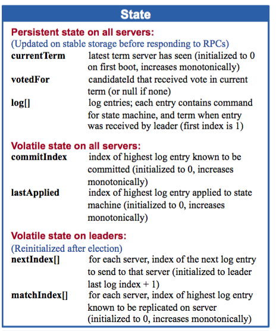
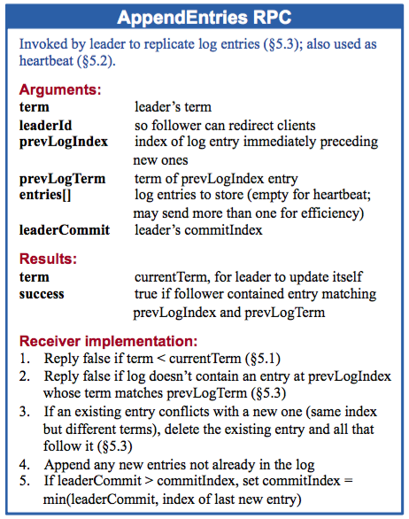
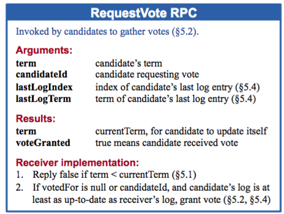
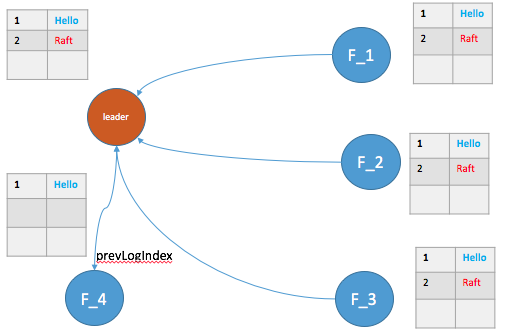
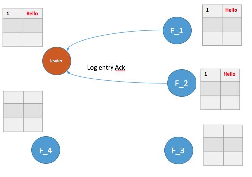
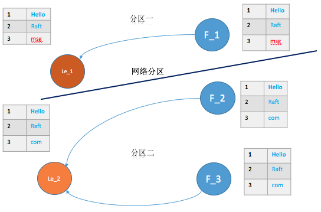
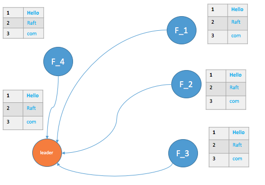
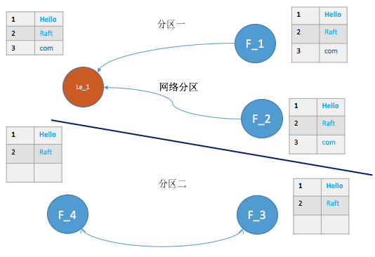

最近研究Raft协议，也阅读了go-raft的实现代码，虽然已经不维护了，但etcd, InfluxDB等项目前期都是使用的该库，还是很有工程上的参考价值。本篇针对论文与实现过程作简要的分析, 并分析了Raft的容错处理。
Raft节点状态数据
下图为每个Raft节点保存的一些状态信息：

大致解释为：
| 状态 | 所有节点保存的持久化数据 |
|---|---|
| currentTerm | 最新任期数，第一次启动时为0，单调递增的 |
| voteFor | 当前任期内，本节点投票目标节点 |
| log[] | 日志项：每一项包含状态机命令，以及从Leader接收到的该日志项的任期 |
| 状态 | 所有节点非持久化数据 |
|---|---|
| commitIndex | 已经提交的最高日志项的编号（默认从0开始，单调递增） |
| lastApplied | log中最高的日志项的编号（默认从0开始，单调递增） |
| 状态 | Leader节点的可变状态(选举后会重置) |
|---|---|
| nextIndex[] | 对于每一个服务器，需要发送给他的下一个日志项的索引值（初始化为领导人最后索引值加一） |
| matchIndex[] | 对于每一个服务器，已经复制给它的日志的最高索引值 |
在定义节点的状态信息时，在goraft的状态信息与论文中的有些差异，goraft中状态信息总结如下：
| 状态 | 所有节点保存的持久化数据 |
|---|---|
| commitIndex | 最新任期数，第一次启动时为0，单调递增的 |
| Peer[] | 集群中其他节点信息 |
| log[] | 日志项(同上) |
| 状态 | 所有节点非持久化数据 |
|---|---|
| currentTerm | 最新任期数，第一次启动时为0，单调递增的 |
| voteFor | 当前任期内，本节点投票目标节点 |
| 状态 | Leader节点的可变状态(选举后会重置) |
|---|---|
| prevLogIndex | Leader节点会维护一个Peer[]，存储集群中其他节点信息。其中每个节点信息中prevLogIndex表示上一次leader复制给它的最高索引编号 |
goraft中并没有将currentTerm作为持久化数据保存，因为已经保存了log[], 而每个log entry中都包含term信息，每次server重启是，都会获取最后一个log entry中的term作为当前term，所以currentTerm不需要存储。
Raft的RPC
Raft的核心部分使用两个RPC进行节点间通信： RequestVote和AppendEntries:
- RequestVote RPC: 由candidate发送给其他节点，请求其他节点为自己投票，如果一个candidate获得了多数节点的投票，则该candidate转变为Leader
- AppendEntries RPC: 由Leader节点发送给其他节点，有两个作用，当其entries域为空时，该RPC作为Leader的心跳，当entries域不为空时，请求其他节点将其中的log添加到自己的log中
AppendEntries RPC
以下为AppendEntries RPC的格式和说明:

从以上AEs(AppendEntries RPC)的请求、响应格式说明可以看到，Raft对于实现细节有非常清晰的界定与描述。对于RPC接受者的实现主要有以下几种情况：
- 如果 term < currentTerm 就返回 false
- 如果日志在 prevLogIndex 位置处的日志项的任期号和 prevLogTerm 不匹配，则返回 false
- 如果已经已经存在的日志项和新的产生冲突（相同Index但是term不同），删除这一条和之后所有的
- 附加任何在已有的日志中不存在的项
- 如果 leaderCommit > commitIndex，令 commitIndex 等于 leaderCommit 和 最新日志项索引值中较小的一个
goraft中的AEs RPC处理过程基本遵循上述处理流程，对应中的主要代码段如下：
func (s *server) processAppendEntriesRequest(req *AppendEntriesRequest){
//如果AppendEntries请求的term小于该server当前term
//返回失败
if req.Term < s.currentTerm {
s.debugln("server.ae.error: stale term")
return false
}
if req.Term == s.currentTerm {
// 当server处于candidate状态，则降为follower
if s.state == Candidate {
s.setState(Follower)
}
} else {
// term 比 目前的大，则有新的leader产生
// 更新 term 以及 leader
s.updateCurrentTerm(req.Term, req.LeaderName)
}
// 将req.PrevLogIndex 编号后的log entry都删除了
if err := s.log.truncate(req.PrevLogIndex, req.PrevLogTerm); err != nil {
return false
}
// 加入该server节点的 log entries
if err := s.log.appendEntries(req.Entries); err != nil {
return false
}
// 提交至req.CommitIndex
if err := s.log.setCommitIndex(req.CommitIndex); err != nil {
s.debugln("server.ae.commit.error: ", err)
return true
}
return true;
}
Leader对于 AppendEntries RPC Response的处理流程:
- 如果在response中，有term大于当前leader的term，则当前leader角色转变为follower
- 如果收到大多数节点的AEs成功回应，后续会判断下次的提交编号，否则返回
- Leader根据大多数节点返回的上次log的索引编号，来决定这次提交的编号， 该提交编号将在下次随AEs RPC传给follower
func (s *server) processAppendEntriesResponse(resp *AppendEntriesResponse) {
// 如果发现AppendEntries的返回中term较大，则角色变为follower
// 这个判断非常重要，能够保证网络分区恢复后的一致性
if resp.Term() > s.Term() {
s.updateCurrentTerm(resp.Term(), "")
return
}
// 对于回应返回成功的，更新map表
if resp.append == true {
s.syncedPeer[resp.peer] = true
}
if len(s.syncedPeer) < s.QuorumSize() {
return
}
// 计算此次需要提交的编号
var indices []uint64
indices = append(indices, s.log.currentIndex())
for _, peer := range s.peers {
indices = append(indices, peer.getPrevLogIndex())
}
sort.Sort(sort.Reverse(uint64Slice(indices)))
commitIndex := indices[s.QuorumSize()-1]
committedIndex := s.log.commitIndex
if commitIndex > committedIndex {
s.log.sync()
s.log.setCommitIndex(commitIndex)
}
}
RequestVote RPC
以下为RequestVote RPC的格式和说明:

对于RequestVote RPC接受者的处理流程：
- 如果term < currentTerm返回 false
- 如果votedFor为空或者就是candidateId，并且候选人的日志也自己一样新，那么就投票给它
goraft中的RequestVote RPC处理过程主要代码段如下：
func (s *server) processRequestVoteRequest(req *RequestVoteRequest){
// term小于当前的，则返回false
if req.Term < s.Term() {
s.debugln("server.rv.deny.vote: cause stale term")
return false
}
// 如果请求的term大于该节点的term，则更新该节点的term
// 如果term相等，且我们已经投给了其他候选节点(votedFor参数),则不投给该候选节点candidate
// 即一个任期内只投给一个候选节点，但是可以投多次（可能存在网络异常，候选节点再次发出投票请求）
if req.Term > s.Term() {
s.updateCurrentTerm(req.Term, "")
} else if s.votedFor != "" && s.votedFor != req.CandidateName {
return false
}
// 如果candidate中最新日志项编号小于 当前server的最新日志项编号，则不投票
// 这里满足了Raft的安全性：必须要比大部分其它候选者的log新，才有机会成为leader
lastIndex, lastTerm := s.log.lastInfo()
if lastIndex > req.LastLogIndex || lastTerm > req.LastLogTerm {
return false
}
s.votedFor = req.CandidateName
return true
}
Candidate对于RequestVote RPC Response的处理流程:
func (s *server) candidateLoop() {
//处于 Candidate 状态，直到状态改变为leader或者follower
//否则超时后再次发起投票请求
for s.State() == Candidate {
if doVote {
//自增term
s.currentTerm++
s.votedFor = s.name
// 向每个servers发送 RequestVote RPCs
respChan = make(chan *RequestVoteResponse, len(s.peers))
for _, peer := range s.peers {
s.routineGroup.Add(1)
go func(peer *Peer) {
defer s.routineGroup.Done()
peer.sendVoteRequest(newRequestVoteRequest(s.currentTerm, s.name, lastLogIndex, lastLogTerm), respChan)
}(peer)
}
//发起请求后的变量初始化
votesGranted = 1
timeoutChan = afterBetween(s.ElectionTimeout(), s.ElectionTimeout()*2)
doVote = false
}
//如果收到超过半数以上的投票支持，则状态变为leader
if votesGranted == s.QuorumSize() {
s.setState(Leader)
return
}
select {
//处理收到RequestVote RPC回应
case resp := <-respChan:
if success := s.processVoteResponse(resp); success {
s.debugln("server.candidate.vote.granted: ", votesGranted)
votesGranted++
}
//如果选举超时，则继续选举
case <-timeoutChan:
doVote = true
}
Raft的failure处理
Raft关于容错的处理是需要考虑的方面。主要的异常包括Leader crash、Follower crash、Network Partition等。
- Leader crash
Leader crash需要考虑crash后，log中未被提交的数据是否属于脏数据。 这个需要分多种情况考虑。(a) 客户端将某条log entry发送给Leader后crash；(b) Leader将log entry发送给Follower后crash，(3)Leader提交了该entry后crash等等。
对于情况(1)而言，该命令是未添加成功的(该命令在原leader中当做脏数据，将等待新Leader的覆盖)，客户端将超时后采取重试机制重新发送该命令，将会被新选举出的Leader处理。
对于情况(2)而言，该命令算添加成功么？这个有需要分情况了：
（a）如果大多数节点多收到了，添加到了各自的log entries中，那么此次添加算成功的。根据Raft的安全性原则，新选举出来的leader一定是包最新log的，并且新选出来的leader，term号一定大于上一轮的term。那么当新的日志提交以后，之前的commit就被间接地提交了；
(b) 如果只有少部分Follower添加到了各自的log entries中，那就存在该日志被覆盖的情况，要看新选出的Leader是否包含这条日志了。
下图为情况(2)中(a)的情形，即大多数节点都AppendEntries了，根据Raft安全性原则，后续的Leader在*F_1*或者F_2 中产生，那么 “Hello”命令也间接被提交了。

对于情况(3)，类似于情况(2)中的(a)。
- Follower crash
Follower crash比较简单，主要是crash恢复后怎么保持log与Leader的一致性。具体如图示，*F_4*恢复后，怎么保持数据一致？

在之前节点状态数据中我们看到，每个节点中会维护一个Peer[], 存放集群中的节点信息。其中就有一个prevLogIndex，用于维护上一次该Follower最新添加的log的索引号。如果 F_4 恢复了，Leader中维护的prevLogIndex=1，后续将从索引2开始的所有log entries发送给 F_4 。
- Network Partition
Network Partition网络分区会导致脑裂问题，即每个分区都会出现一个Leader。这种情况随着分区的恢复，Raft很快能够恢复集群的一致性。
下图为网络分区的一种情形，其中le_1 为原来的Leader， *le_2*为分区二新选举出的Leader（term比分区一的大)。

对于图中的分区一，由于通信的节点不满足大多数节点（这里假设没有机制去变化整个集群总共的节点数量），所以向该分区中添加的日志都不能提交，客户端将一直收到超时的回复。而对于分区二，满足提交的条件，该分区中的日志都能够被正常提交。
待分区恢复，*le_1*由于term小于*le_2*，则自动转为Follower状态，如下图所示，最终能够实现一致性。

下图为网络分区的另一种情形，le_1 分区占有了大部分节点，能够正常的提交日志。但是分区二中的两个Follower节点，由于选票个数未过半，将持续处于Candidate状态，直到网络恢复。

由于分区二的竞选，导致term不停增加，网络分区恢复后，集群中的term号会随着leader的AppendEntries RPC（参见processAppendEntriesResponse函数），将term一起同步到最新。
虽然Raft易于理解，但是工程实践还是需要考虑到各种异常情况。通过代码的阅读，也能够更加理解其背后的原理。
参考阅读
In Search of an Understandable Consensus Algorithm